+ Реконструкция (эпизоды 1, 2, 4, 5) LCRecon Субтитры: Русские {karlivanovich} и Английские | 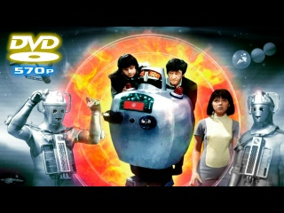 |
|---|---|
Фанатская CGI анимация (эпизоды 1, 2, 4, 5) WhoRecons Субтитры: отсутствуют | 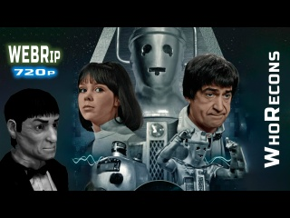 |
Фанатская CGI анимация (эпизоды 1, 2, 4, 5) TardisTimegirl Субтитры: отсутствуют | 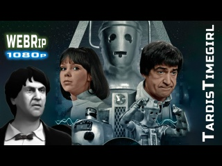 |
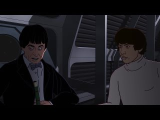
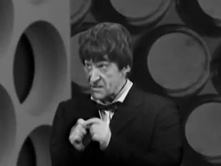 эп.1 - Отрывок- Открывающая сцена (Harry Robins) | 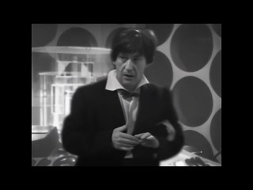 эп.1 - Отрывок- Открывающая сцена (Ian Levine) |
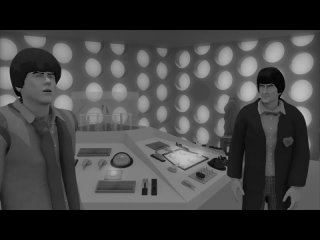 эп.1 - Отрывок- Открывающая сцена (Marcus Dilloni) | 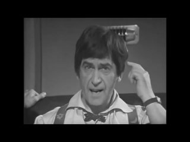 эп.4 - Отрывок- Доктор пытается объяснить (AL REVIEWS WHO) |
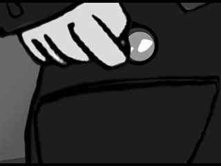 эп.4 - Отрывок- Клиффхэнгер (Rob McClory) | 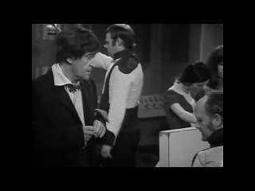 эп.5 - Отрывок- Атака киберлюдей (Doctor Smith) |
| 6-й эпизод сохранился - 16mm t/r * 3-й эпизод найден в 1984 г. - 16mm t/r * На утерянные (1, 2, 4, 5) имеется: - реконструкция |
|---|
|
«Колесо в космосе» — на космической станции назревает беда: киберлюди проникают на борт и готовятся захватить контроль, а Второй Доктор и Джейми пытаются раскрыть угрозу, пока экипаж не поверил в опасность. В финале к команде присоединяется Зои — новая спутница, готовая к путешествиям сквозь время и пространство. Тон серии — напряжённый и холодный, будто сам космос шепчет об опасности.
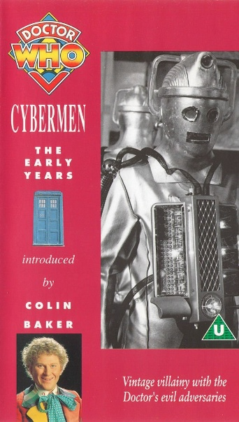 VHS - июль 1992 |  DVD (3+6эп.) - 1 ноября 2004 * Версия в нашей группе | 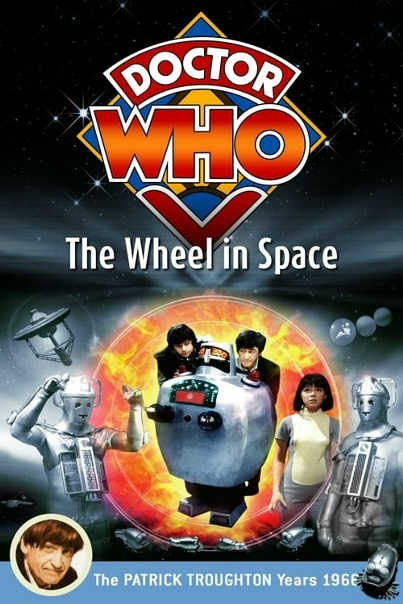 LC recon - 2011 * Версия в нашей группе |
|---|
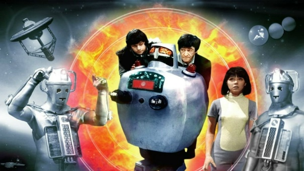
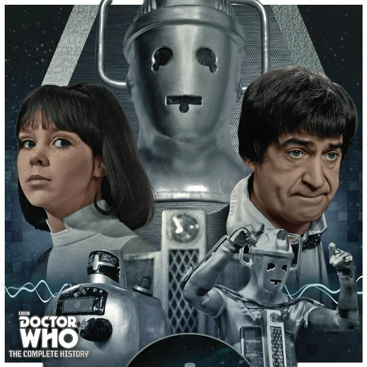